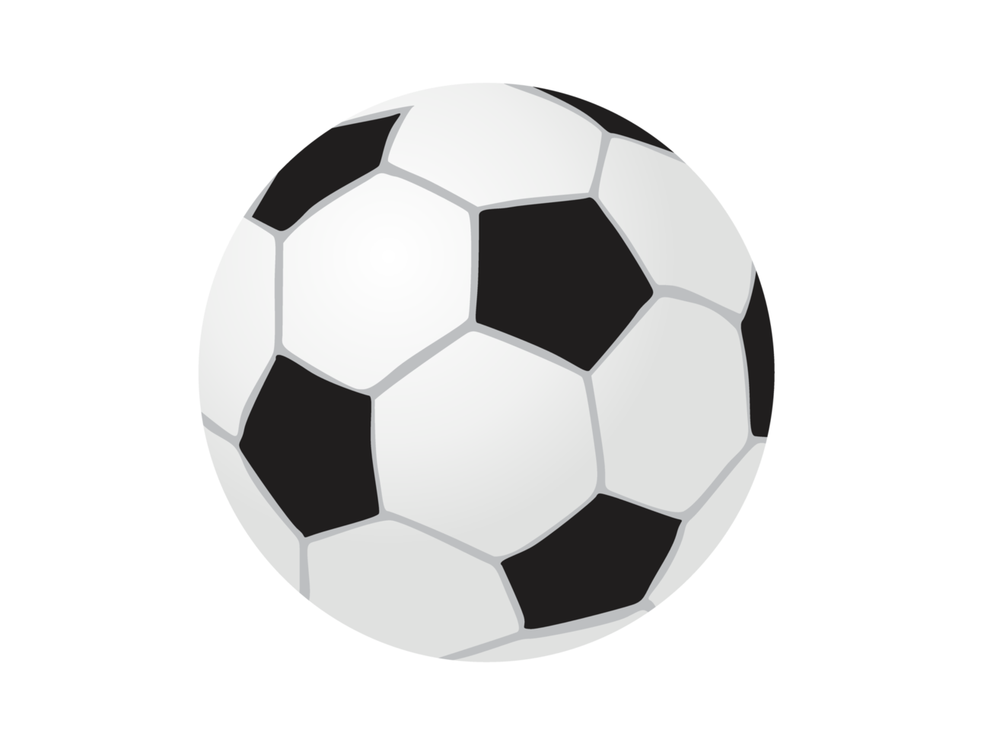
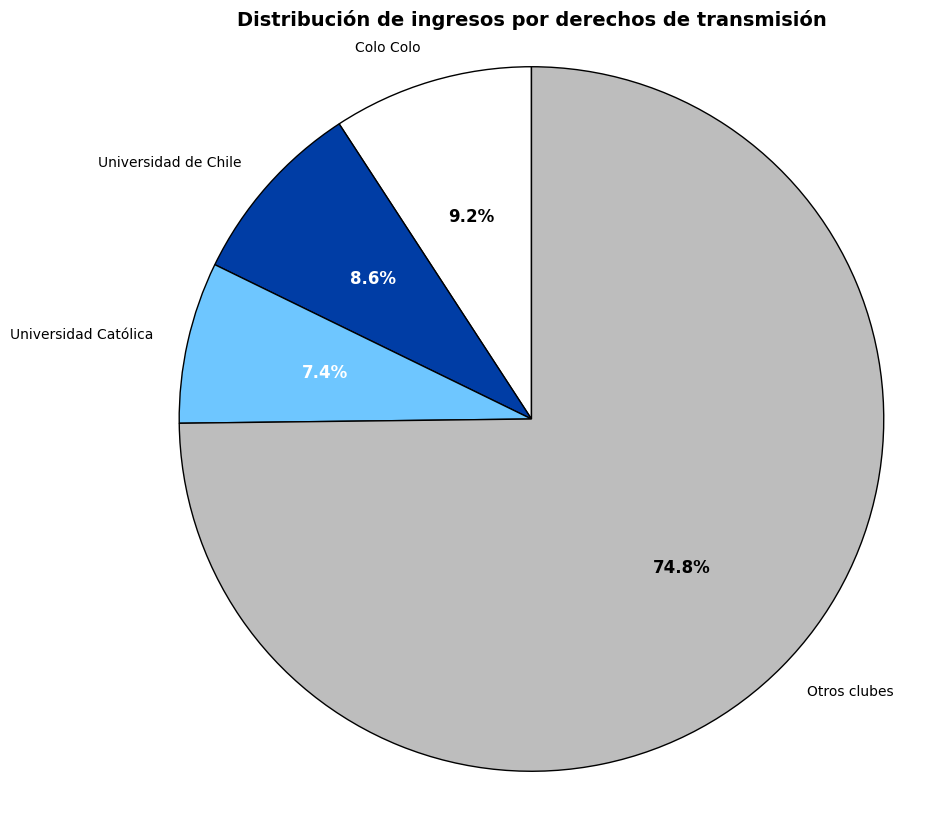
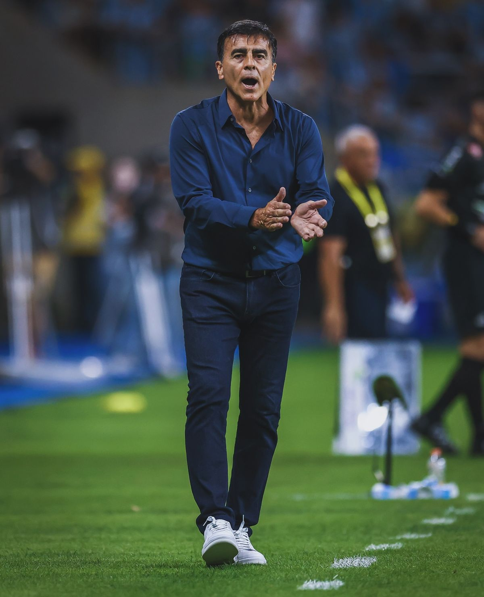
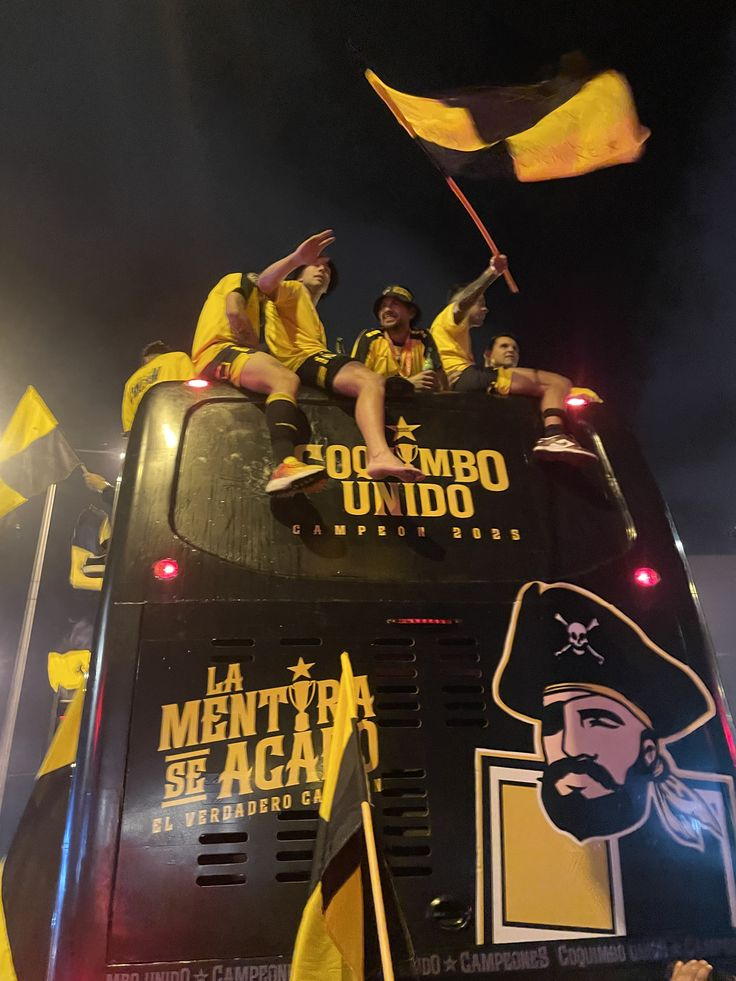
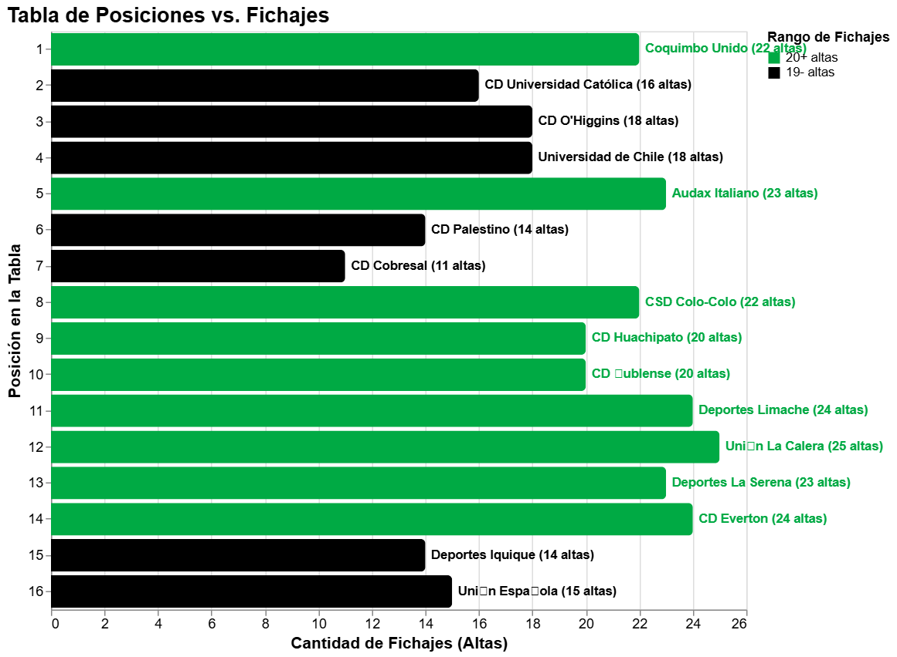

El mito de los millones en el fútbol chileno
Un análisis de la brecha financiera y la realidad del torneo

Un análisis de la brecha financiera y la realidad del torneo

Desde el año 2018, el fútbol chileno comenzó una nueva etapa tras el cambio de formato del campeonato nacional, pasando de torneos semestrales a una competencia anual.
Colo Colo, Universidad de Chile y Universidad Católica figuran año tras año como los equipos con mayor potencial económico, algo que se demuestra en el valor de sus planillas cada temporada. Mientras otros clubes intentan competir con menos recursos y proyectos deportivos más inestables, los “tres grandes” concentran gran parte del valor de mercado del campeonato chileno.
El desequilibrio económico que afecta a la primera división chilena tiene una razón en específico, y es que al ser los contratos de televisión el principal ingreso de la liga, existe un acuerdo que reparte de forma fija el 25% de este dinero a Colo Colo, Universidad de Chile y Universidad Católica (en partes iguales), mientras que el resto se reparte entre los 13 clubes restantes. Esto sumado a que los tres grandes son los equipos que venden más entradas, más camisetas venden y más dinero por patrocinadores reciben, les permite tener las plantillas más caras de la primera división.

Colo Colo, U. de Chile y U. Católica son los equipos que más dinero han invertido. Mediante el selector interactivo puedes contrastar de manera directa cómo se ha mantenido la brecha financiera frente a los demás clubes del torneo año tras año.
A lo largo de los años, los tres grandes del fútbol chileno lideran gran parte del período, consolidando una diferencia económica importante frente al resto de los equipos. Sin embargo, los datos también permiten observar que la inversión económica no siempre se traduce directamente en resultados deportivos. Aunque los clubes con planteles más valorizados suelen mantenerse en posiciones competitivas, esto no garantiza automáticamente títulos o campañas exitosas.
La evolución del mercado también refleja momentos de crecimiento y caída en distintos clubes, influenciados por ventas de jugadores, clasificaciones internacionales y cambios en la estabilidad institucional, siendo esto último un factor clave. El siguiente gráfico muestra la relación entre la estabilidad técnica (mantener a un DT durante la temporada) y la posición final de los equipos en la tabla.

A continuación, analiza en detalle los tres pilares clave que marcaron la pauta y las tendencias de rendimiento y estabilidad técnica durante los últimos siete años en el campeonato nacional.
El 72% de los proyectos que mantuvieron a su DT durante el trancurso de la temporada terminaron en los primeros tres puestos de la tabla de posiciones.
Los clubes que rotaron de técnico más de dos veces terminaron un 86% de las veces en la mitad inferior de la tabla (puesto 8 hacia abajo).
Todos los planteles que fueron campeones entre el 2019 y el 2025 (excepto Católica 2021) mantuvieron a un DT durante el año. En contraparte, destacan casos como el de Everton 2025, que a pesar de ser el cuarto plantel más caro de la temporada terminó antepenúltimo y tuvo a 4 técnicos en el año.
La temporada 2025 comenzó con altas expectativas. El año anterior, Colo Colo se había coronado campeón tras un desenlace de infarto ante Universidad de Chile; un torneo emocionante donde los dos clubes más grandes del país se prepararon con todo para disputar la Copa Libertadores 2025. Los albos, además, contaban con el incentivo de celebrar su centenario: los 100 años de la institución impulsaron potentes contrataciones a inicio de año en busca de la gloria. Un poco más atrás aparecían la U y la UC, ambas con refuerzos importantes, pero que parecían quedar a la sombra tras el agresivo mercado de fichajes realizado por el Cacique.
Por otra parte, Everton prometía dar de qué hablar. Respaldados por el Grupo Pachuca, los viñamarinos sumaron numerosas incorporaciones, varias de ellas provenientes de una alianza con Peñarol, uno de los gigantes uruguayos. En el otro extremo, los recién ascendidos, Deportes La Serena y Deportes Limache, reestructuraron profundamente sus planteles con el objetivo de mantener la categoría, registrando múltiples altas y bajas para competir de buena forma en Primera División.
En contraste, Colo Colo (uno de los equipos que más se movió en el mercado) firmó un año pésimo, culminando octavo en la clasificación y quedando fuera de las competencias internacionales para el próximo período. Everton, otra de las grandes promesas del torneo, se convirtió en una de las decepciones del año al salvarse del descenso apenas en la última fecha.
Para entender la magnitud de estas sorpresas, los datos duros ofrecen una perspectiva esclarecedora. El siguiente gráfico cruza la posición final en la tabla con el volumen de fichajes realizados por cada institución. En él se hace evidente cómo la línea de las 20 o más altas inundó la segunda mitad de la clasificación, demostrando gráficamente que el camino al éxito en 2025 no dependió de la cantidad de nombres nuevos en el camarín.


De esta manera, el torneo dejó una lección clara: 7 de los 9 clubes que sumaron más de 20 incorporaciones durante el año terminaron de la octava posición hacia abajo, demostrando que salir a fichar en masa no siempre garantiza los mejores resultados.
El análisis de las últimas siete temporadas en la Primera División de Chile deja una lección contundente: en el fútbol chileno, el orden y la estabilidad suelen ser más rentables que el dinero invertido. Si bien existe una brecha económica histórica y estructural que posiciona a Colo Colo, Universidad de Chile y Universidad Católica un escalón por sobre el resto en valor de mercado, los billetes por sí solos no compran copas. El dinero puede otorgar una ventaja inicial y un colchón financiero, pero es la gestión de ese recurso la que define el éxito.
En base a la investigación realizada, se puede concluir que el éxito de los procesos largos y la catástrofe que suele acompañar a la rotación excesiva de directores técnicos y jugadores no son casualidades, sino una tendencia, y aunque pueden haber excepciones (como la Universidad Católica de 2021 que campeonó cambiado varias veces de DT, o Cobreloa 2024 que descendió manteniendo el suyo), la regla general es clara.
El caótico desenlace de la temporada 2025 funciona como el reflejo fiel de esta premisa. Fue el año en que Colo Colo, en el año de su centenario, se quedó con las manos vacías y sin pasaje a copas internacionales, mientras que Everton, a pesar de la fuerte inyección económica que recibió del Grupo Pachuca, terminó salvándose del descenso en la última fecha. En la otra vereda, un proyecto más austero pero cohesionado como Coquimbo Unido terminó levantando la copa. El hecho que siete de los nueve clubes que rearmaron sus planteles con más de veinte fichajes hayan terminado de la mitad de la tabla hacia abajo es la prueba empírica de que acumular nombres no es lo mismo que construir un equipo.
En un fútbol chileno marcado por una desigualdad financiera y la inestabilidad institucional, apostar por la continuidad y el mediano plazo parece ser el camino más eficiente para desafiar el desequilibrio económico. Al final del día, los datos presentados, y casos como el de Coquimbo Unido nos recuerdan que, si bien el dinero es un factor de peso, este no puede comprar la estabilidad ni la cohesión de un equipo.